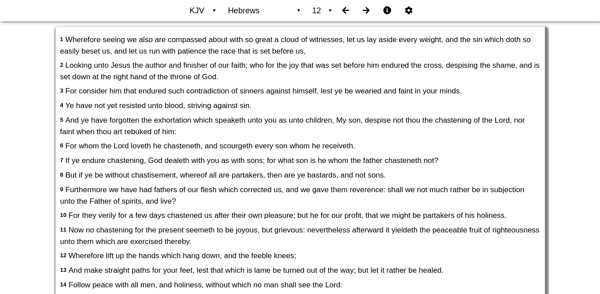

Heb12 Desktop is a program for Windows and Linux that allows you to easily read the Bible on your computer.
It is current
We currently have pre-release versions of Heb12 Desktop available for those that want it.
Download the Windows version of Heb12.
Note: If you use McAfee anti-malware, the program might not install. This is a known issue and we are working on it.
There are four different ways to install it on Linux.
The .deb file is used for Debian based distributions. If you use any of the distributions listed below, use the .deb package.
More can be found on Debian's wiki.
The .rpm file is used for Red Hat based distributions.
The .AppImage file can be run on all Linux distributions.
The Snap package can be installed on any distribution with the snapd package installed. There are some benefits for using it. You get automatic updates, and you can choose to install it from different channels. The edge channel gets updated every time we improve the code (which can be unstable!), the beta channel gets updated for every release that is not quite done. The normal channel (stable) is the official releases of the program.
Install the program via Snap by running this: sudo snap install heb12 --edge